Criteria for Similarity of Triangles
In the previous section, we stated that two triangles are similar, if (i) their corresponding angles are equal and (ii) their corresponding sides are in the same ratio (or proportion).
That is, in \(\triangle ABC\) and \(\triangle DEF\), if
- (i)\(\angle A = \angle D\), \(\angle B = \angle E\), \(\angle C = \angle F\) and
- (ii)\(\dfrac{AB}{DE} = \dfrac{BC}{EF} = \dfrac{CA}{FD}\), then the two triangles are similar (see Fig. 6.22).
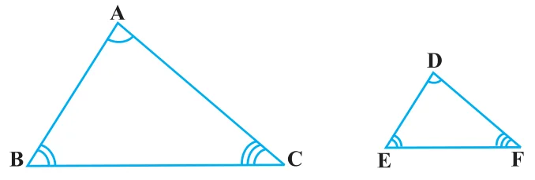
Here, you can see that A corresponds to D, B corresponds to E and C corresponds to F. Symbolically, we write the similarity of these two triangles as ‘\(\triangle ABC \sim \triangle DEF\)’ and read it as ‘triangle ABC is similar to triangle DEF’. The symbol ‘~’ stands for ‘is similar to’. Recall that you have used the symbol ‘\(\cong\)’ for ‘is congruent to’ in Class IX.
Now a natural question arises : For checking the similarity of two triangles, say ABC and DEF, should we always look for all the equality relations of their corresponding angles (\(\angle A = \angle D\), \(\angle B = \angle E\), \(\angle C = \angle F\)) and all the equality relations of the ratios of their corresponding sides \(\left(\frac{AB}{DE} = \frac{BC}{EF} = \frac{CA}{FD}\right)\)? Let us examine. You may recall that in Class IX, you have obtained some criteria for congruency of two triangles involving only three pairs of corresponding parts (or elements) of the two triangles. Here also, let us make an attempt to arrive at certain criteria for similarity of two triangles involving relationship between less number of pairs of corresponding parts of the two triangles, instead of all the six pairs of corresponding parts. For this, let us perform the following activity:
Activity 4 : Draw two line segments BC and EF of two different lengths, say 3 cm and 5 cm respectively. Then, at the points B and C respectively, construct angles PBC and QCB of some measures, say, \(60^{\circ}\) and \(40^{\circ}\). Also, at the points E and F, construct angles REF and SFE of \(60^{\circ}\) and \(40^{\circ}\) respectively (see Fig. 6.23).
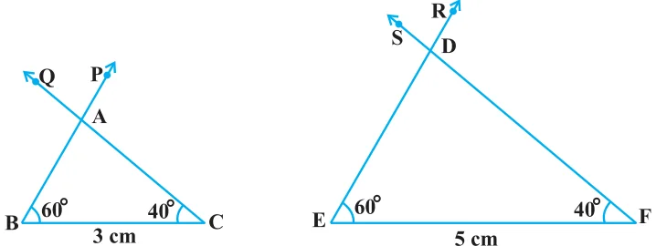
Let rays BP and CQ intersect each other at A and rays ER and FS intersect each other at D. In the two triangles ABC and DEF, you can see that \(\angle B = \angle E\), \(\angle C = \angle F\) and \(\angle A = \angle D\). That is, corresponding angles of these two triangles are equal. What can you say about their corresponding sides ? Note that \(\frac{BC}{EF} = \frac{3}{5} = 0.6\). What about \(\frac{AB}{DE}\) and \(\frac{CA}{FD}\)? On measuring AB, DE, CA and FD, you will find that \(\frac{AB}{DE}\) and \(\frac{CA}{FD}\) are also equal to 0.6 (or nearly equal to 0.6, if there is some error in the measurement). Thus, \(\frac{AB}{DE} = \frac{BC}{EF} = \frac{CA}{FD}\). You can repeat this activity by constructing several pairs of triangles having their corresponding angles equal. Every time, you will find that their corresponding sides are in the same ratio (or proportion). This activity leads us to the following criterion for similarity of two triangles.
Theorem 6.3 : If in two triangles, corresponding angles are equal, then their corresponding sides are in the same ratio (or proportion) and hence the two triangles are similar.
This criterion is referred to as the AAA (Angle–Angle–Angle) criterion of similarity of two triangles.
This theorem can be proved by taking two triangles ABC and DEF such that \(\angle A = \angle D\), \(\angle B = \angle E\) and \(\angle C = \angle F\) (see Fig. 6.24)
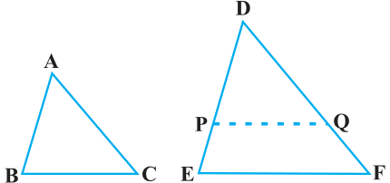
Cut \(DP = AB\) and \(DQ = AC\) and join PQ.
So, \(\triangle ABC \cong \triangle DPQ\) (Why ?)
This gives \(\angle B = \angle P = \angle E\) and \(PQ \parallel EF\) (How?)
Therefore, \(\dfrac{DP}{PE} = \dfrac{DQ}{QF}\) (Why?)
i.e., \(\dfrac{AB}{DE} = \dfrac{AC}{DF}\) (Why?)
Similarly, \(\dfrac{AB}{DE} = \dfrac{BC}{EF}\) and so \(\dfrac{AB}{DE} = \dfrac{BC}{EF} = \dfrac{AC}{DF}\).
Remark : If two angles of a triangle are respectively equal to two angles of another triangle, then by the angle sum property of a triangle their third angles will also be equal. Therefore, AAA similarity criterion can also be stated as follows:
If two angles of one triangle are respectively equal to two angles of another triangle, then the two triangles are similar.
This may be referred to as the AA similarity criterion for two triangles.
You have seen above that if the three angles of one triangle are respectively equal to the three angles of another triangle, then their corresponding sides are proportional (i.e., in the same ratio). What about the converse of this statement? Is the converse true? In other words, if the sides of a triangle are respectively proportional to the sides of another triangle, is it true that their corresponding angles are equal? Let us examine it through an activity :
Activity 5 : Draw two triangles ABC and DEF such that \(AB = 3\) cm, \(BC = 6\) cm, \(CA = 8\) cm, \(DE = 4.5\) cm, \(EF = 9\) cm and \(FD = 12\) cm (see Fig. 6.25).
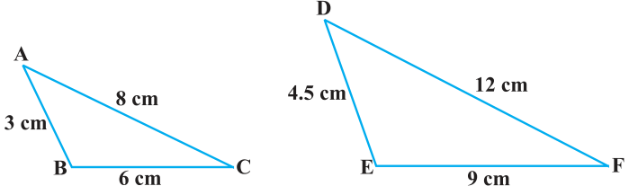
So, you have : \(\dfrac{AB}{DE} = \dfrac{BC}{EF} = \dfrac{CA}{FD}\) (each equal to \(\frac{2}{3}\))
Now measure \(\angle A\), \(\angle B\), \(\angle C\), \(\angle D\), \(\angle E\) and \(\angle F\). You will observe that \(\angle A = \angle D\), \(\angle B = \angle E\) and \(\angle C = \angle F\), i.e., the corresponding angles of the two triangles are equal.
You can repeat this activity by drawing several such triangles (having their sides in the same ratio). Everytime you shall see that their corresponding angles are equal. It is due to the following criterion of similarity of two triangles:
Theorem 6.4 : If in two triangles, sides of one triangle are proportional to (i.e., in the same ratio of ) the sides of the other triangle, then their corresponding angles are equal and hence the two triangles are similiar.
This criterion is referred to as the SSS (Side–Side–Side) similarity criterion for two triangles.
This theorem can be proved by taking two triangles ABC and DEF such that \(\frac{AB}{DE} = \frac{BC}{EF} = \frac{CA}{FD}\) \((\lt 1)\) (see Fig. 6.26):
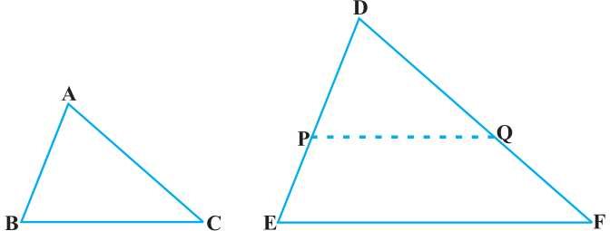
Cut \(DP = AB\) and \(DQ = AC\) and join PQ.
It can be seen that \(\dfrac{DP}{PE} = \dfrac{DQ}{QF}\) and \(PQ \parallel EF\) (How?)
So, \(\angle P = \angle E\) and \(\angle Q = \angle F\).
Therefore, \(\dfrac{DP}{DE} = \dfrac{DQ}{DF} = \dfrac{PQ}{EF}\)
So, \(\dfrac{DP}{DE} = \dfrac{DQ}{DF} = \dfrac{BC}{EF}\) (Why?)
So, \(BC = PQ\) (Why?)
Thus, \(\triangle ABC \cong \triangle DPQ\) (Why ?)
So, \(\angle A = \angle D\), \(\angle B = \angle E\) and \(\angle C = \angle F\) (How ?)
Remark : You may recall that either of the two conditions namely, (i) corresponding angles are equal and (ii) corresponding sides are in the same ratio is not sufficient for two polygons to be similar. However, on the basis of Theorems 6.3 and 6.4, you can now say that in case of similarity of the two triangles, it is not necessary to check both the conditions as one condition implies the other.
Let us now recall the various criteria for congruency of two triangles learnt in Class IX. You may observe that SSS similarity criterion can be compared with the SSS congruency criterion. This suggests us to look for a similarity criterion comparable to SAS congruency criterion of triangles. For this, let us perform an activity.
Activity 6 : Draw two triangles ABC and DEF such that \(AB = 2\) cm, \(\angle A = 50^{\circ}\), \(AC = 4\) cm, \(DE = 3\) cm, \(\angle D = 50^{\circ}\) and \(DF = 6\) cm (see Fig. 6.27).
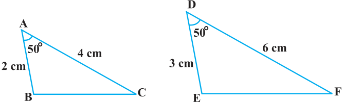
Here, you may observe that \(\frac{AB}{DE} = \frac{AC}{DF}\) (each equal to \(\frac{2}{3}\)) and \(\angle A\) (included between the sides AB and AC) \(= \angle D\) (included between the sides DE and DF). That is, one angle of a triangle is equal to one angle of another triangle and sides including these angles are in the same ratio (i.e., proportion). Now let us measure \(\angle B\), \(\angle C\), \(\angle E\) and \(\angle F\).
You will find that \(\angle B = \angle E\) and \(\angle C = \angle F\). That is, \(\angle A = \angle D\), \(\angle B = \angle E\) and \(\angle C = \angle F\). So, by AAA similarity criterion, \(\triangle ABC \sim \triangle DEF\). You may repeat this activity by drawing several pairs of such triangles with one angle of a triangle equal to one angle of another triangle and the sides including these angles are proportional. Everytime, you will find that the triangles are similar. It is due to the following criterion of similarity of triangles:
Theorem 6.5 : If one angle of a triangle is equal to one angle of the other triangle and the sides including these angles are proportional, then the two triangles are similar.
This criterion is referred to as the SAS (Side–Angle–Side) similarity criterion for two triangles.
As before, this theorem can be proved by taking two triangles ABC and DEF such that \(\frac{AB}{DE} = \frac{AC}{DF}\) \((\lt 1)\) and \(\angle A = \angle D\) (see Fig. 6.28). Cut \(DP = AB\), \(DQ = AC\) and join PQ.
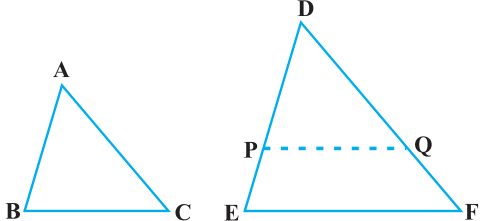
Now, \(PQ \parallel EF\) and \(\triangle ABC \cong \triangle DPQ\) (How ?)
So, \(\angle A = \angle D\), \(\angle B = \angle P\) and \(\angle C = \angle Q\)
Therefore, \(\triangle ABC \sim \triangle DEF\) (Why?)
We now take some examples to illustrate the use of these criteria.
Example 4 :
In Fig. 6.29, if \(PQ \parallel RS\), prove that \(\triangle POQ \sim \triangle SOR\).
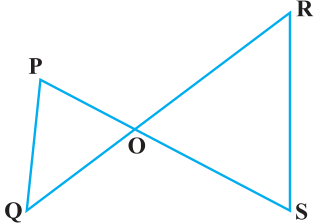
Solution :
\(PQ \parallel RS\) (Given)
So, \(\angle P = \angle S\) (Alternate angles)
and \(\angle Q = \angle R\)
Also, \(\angle POQ = \angle SOR\) (Vertically opposite angles)
Therefore, \(\triangle POQ \sim \triangle SOR\) (AAA similarity criterion)
Example 5 :
Observe Fig. 6.30 and then find \(\angle P\).
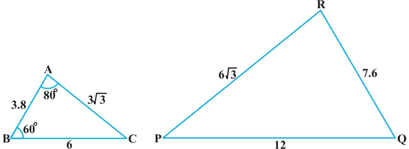
Solution :
In \(\triangle ABC\) and \(\triangle PQR\),
\(\dfrac{AB}{RQ} = \dfrac{3.8}{7.6} = \dfrac{1}{2},\quad \dfrac{BC}{QP} = \dfrac{6}{12} = \dfrac{1}{2}\) and \(\dfrac{CA}{PR} = \dfrac{3\sqrt{3}}{6\sqrt{3}} = \dfrac{1}{2}\)
That is, \(\dfrac{AB}{RQ} = \dfrac{BC}{QP} = \dfrac{CA}{PR}\)
So, \(\triangle ABC \sim \triangle RQP\) (SSS similarity)
Therefore, \(\angle C = \angle P\) (Corresponding angles of similar triangles)
But \(\angle C = 180^{\circ} - \angle A - \angle B\) (Angle sum property)
\(= 180^{\circ} - 80^{\circ} - 60^{\circ} = 40^{\circ}\)
So, \(\angle P = 40^{\circ}\)
Example 6 :
In Fig. 6.31, \(OA \cdot OB = OC \cdot OD\).
Show that \(\angle A = \angle C\) and \(\angle B = \angle D\).
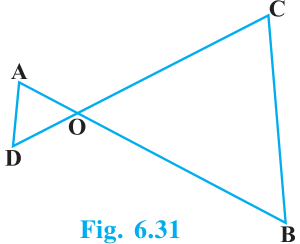
Solution :
\(OA \cdot OB = OC \cdot OD\) (Given)
So, \(\dfrac{OA}{OC} = \dfrac{OD}{OB} \qquad (1)\)
Also, we have \(\angle AOD = \angle COB\) (Vertically opposite angles) \(\qquad (2)\)
Therefore, from (1) and (2), \(\triangle AOD \sim \triangle COB\) (SAS similarity criterion)
So, \(\angle A = \angle C\) and \(\angle D = \angle B\) (Corresponding angles of similar triangles)
Example 7 :
A girl of height 90 cm is walking away from the base of a lamp-post at a speed of 1.2 m/s. If the lamp is 3.6 m above the ground, find the length of her shadow after 4 seconds.
Solution :
Let AB denote the lamp-post and CD the girl after walking for 4 seconds away from the lamp-post (see Fig. 6.32).
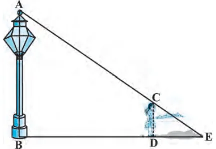
From the figure, you can see that DE is the shadow of the girl. Let DE be x metres.
Now, \(BD = 1.2\text{ m} \times 4 = 4.8\text{ m}\).
Note that in \(\triangle ABE\) and \(\triangle CDE\),
\(\angle B = \angle D\) (Each is of \(90^{\circ}\) because lamp-post as well as the girl are standing vertical to the ground)
and \(\angle E = \angle E\) (Same angle)
So, \(\triangle ABE \sim \triangle CDE\) (AA similarity criterion)
Therefore, \(\dfrac{BE}{DE} = \dfrac{AB}{CD}\)
i.e., \(\dfrac{4.8 + x}{x} = \dfrac{3.6}{0.9}\) \(\left(90\text{ cm} = \dfrac{90}{100}\text{ m} = 0.9\text{ m}\right)\)
i.e., \(4.8 + x = 4x\)
i.e., \(3x = 4.8\)
i.e., \(x = 1.6\)
So, the shadow of the girl after walking for 4 seconds is 1.6 m long.
Example 8 :
In Fig. 6.33, CM and RN are respectively the medians of \(\triangle ABC\) and \(\triangle PQR\). If \(\triangle ABC \sim \triangle PQR\), prove that :
- (i)\(\triangle AMC \sim \triangle PNR\)
- (ii)\(\dfrac{CM}{RN} = \dfrac{AB}{PQ}\)
- (iii)\(\triangle CMB \sim \triangle RNQ\)
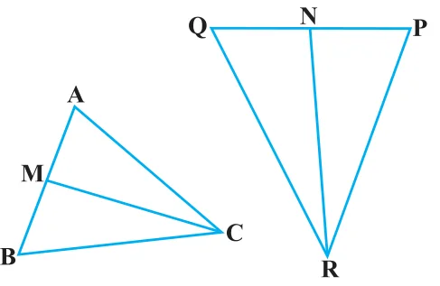
Solution :
(i) \(\triangle ABC \sim \triangle PQR\) (Given)
So, \(\dfrac{AB}{PQ} = \dfrac{BC}{QR} = \dfrac{CA}{RP} \qquad (1)\)
and \(\angle A = \angle P\), \(\angle B = \angle Q\) and \(\angle C = \angle R \qquad (2)\)
But \(AB = 2\,AM\) and \(PQ = 2\,PN\) (As CM and RN are medians)
So, from (1), \(\dfrac{2AM}{2PN} = \dfrac{CA}{RP}\)
i.e., \(\dfrac{AM}{PN} = \dfrac{CA}{RP} \qquad (3)\)
Also, \(\angle MAC = \angle NPR\) [From (2)] \(\qquad (4)\)
So, from (3) and (4),
\(\triangle AMC \sim \triangle PNR\) (SAS similarity) \(\qquad (5)\)
(ii) From (5), \(\dfrac{CM}{RN} = \dfrac{CA}{RP} \qquad (6)\)
But \(\dfrac{CA}{RP} = \dfrac{AB}{PQ}\) [From (1)] \(\qquad (7)\)
Therefore, \(\dfrac{CM}{RN} = \dfrac{AB}{PQ}\) [From (6) and (7)] \(\qquad (8)\)
(iii) Again, \(\dfrac{AB}{PQ} = \dfrac{BC}{QR}\) [From (1)]
Therefore, \(\dfrac{CM}{RN} = \dfrac{BC}{QR}\) [From (8)] \(\qquad (9)\)
Also, \(\dfrac{CM}{RN} = \dfrac{AB}{PQ} = \dfrac{2\,BM}{2\,QN}\)
i.e., \(\dfrac{CM}{RN} = \dfrac{BM}{QN} \qquad (10)\)
i.e., \(\dfrac{CM}{RN} = \dfrac{BC}{QR} = \dfrac{BM}{QN}\) [From (9) and (10)]
Therefore, \(\triangle CMB \sim \triangle RNQ\) (SSS similarity)
[Note : You can also prove part (iii) by following the same method as used for proving part (i).]